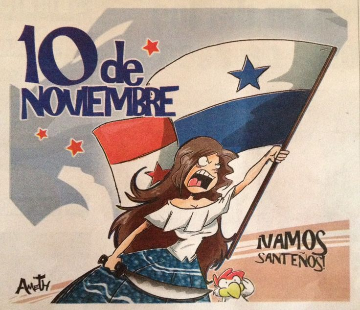

examen de jeiner del 12 H
10 de noviembre
10 de Noviembre

El 10 de noviembre, Panamá conmemora el Primer Grito de Independencia
en la Villa de Los Santos, un evento histórico que marcó el inicio
del camino hacia la independencia del país en 1821.
Contexto Historico
El 10 de noviembre de 1821, los habitantes de la Villa de
Los Santos se levantaron contra el dominio español, proclamando
su deseo de independencia. Este acto fue el primer paso hacia la libertad total de Panamá
, que se concretó el 28 de noviembre del mismo año
. La figura de Rufina Alfaro, una joven santeña, se destaca en la historia por su valentía
y astucia durante este proceso
Celebraciones y Eventos
Cada año, el 10 de noviembre se celebra con desfiles cívicos
, presentaciones folclóricas y actos protocolares en todo el país.
Las principales actividades incluyen:
Desfiles: Se llevan a cabo en diversas provincias, destacando la participación
de bandas estudiantiles y grupos culturales. En la Villa de Los Santos
, el desfile es especialmente significativo, con carretas
, tambores y trajes típicos que representan la cultura panameña.
Actos civicos: Autoridades estatales y personalidades
del folclore nacional participan en ceremonias que rinden homenaje
a este importante acontecimiento histórico.
Personajes Importantes
Entre los personajes ilustres se encontraban José Higinio Durán y Martell,
obispo de Panamá; Dr. Carlos de Icaza, Mariano Arosemena, Juan de Herrera,
Narciso de Urriola, José de Alba, Gregorio Gómez, Manuel María Ayala, Antonio Planas
, Juan Pío Victorias, Antonio Bermejo, Gaspar Arosemena y Casimiro del Bal
.jpg) .
.
Historia
El Primer Grito de Independencia de la Villa de Los Santos se conoce al
hecho histórico ocurrido el 10 de noviembre de 1821 en Panamá,
en la que ocurre un lanzamiento popular en contra del gobierno colonial español
en La Villa de Los Santos en la Provincia de Los Santos
Importancia
Cada 10 de noviembre, Panamá celebra con orgullo
el Primer Grito de Independencia del Reino de España, un hecho histórico
ocurrido en 1821 en la Villa de Los Santos, que marcó el inicio del proceso libertario del país.
Desarrollo
El 10 de noviembre se celebra el Día Mundial de la Ciencia para la Paz
y el Desarrollo, una fecha señalada por la Unesco
(Organización de las Naciones Unidas para la Educación, la Ciencia y la Cultura)
que tiene por objeto subrayar el papel fundamental de la ciencia en la sociedad
y la necesidad de interesar al público en su desarrollo y en los debates que suscita.
Obra publicada con Licencia Creative Commons Reconocimiento Compartir igual 4.0